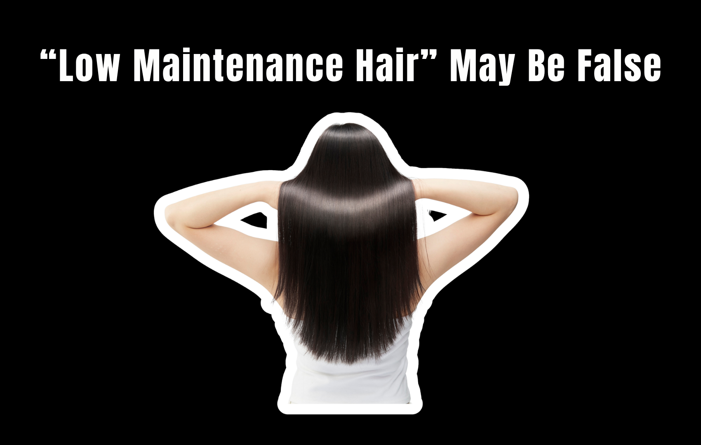

“Low-maintenance hair” sounds like the beauty equivalent of having it all.
Wake up, brush your hair, and go. No hour-long styling routine. No fighting frizz. No constantly touching up your color. Just effortless, polished hair.
But there’s a catch: sometimes “low maintenance” doesn’t mean no maintenance. It means moving the maintenance from your bathroom to the salon.
From keratin treatments and Brazilian blowouts to glosses, balayage, and smoothing services, there are plenty of salon treatments designed to make hair easier to style. They can absolutely save time in your daily routine — but that convenience often comes with a cost, upkeep, and its own set of considerations.
So, is low-maintenance hair actually low maintenance?
The Salon Treatment Shortcut
There’s nothing wrong with wanting hair that is easier to manage. In fact, that is exactly what many professional treatments are designed to do.
A smoothing treatment can reduce frizz and shorten blow-drying time. A gloss can refresh color without committing to a major color change. Balayage can create a softer grow-out than traditional highlights, meaning fewer obvious roots.
The result can be less work between appointments.
But that doesn’t necessarily mean less work overall.
Instead, you may be exchanging daily styling for periodic salon appointments, maintenance products, and careful aftercare.
Keratin Treatments: Less Styling, More Planning
Keratin and other professional smoothing treatments are popular among people who want to reduce frizz and make their hair easier to blow-dry or style.
The appeal is obvious: if your hair normally requires a lot of heat and brushing to look smooth, reducing the amount of styling required can make your routine considerably easier.
But the treatment itself isn’t a one-and-done solution.
Results gradually wear off, and how long they last depends on several things:
- The specific service you had done.
- Your hair.
- How often you wash it.
- Other factors specific to you.
Some people may also adjust their hair-washing routine or use products recommended for maintaining the treatment.
And then there is the appointment itself.
That isn’t necessarily a bad trade. It’s just a different kind of maintenance.
Balayage: The Low-Maintenance Color That Still Needs Maintenance
Balayage is often described as the answer for people who don’t want to live at the salon.
Compared with a traditional all-over color or highly structured highlights, strategically placed balayage can create a softer transition as the hair grows. That can make regrowth less noticeable.
But “less noticeable” isn’t the same as “maintenance-free.”
Your color can still become dull, your ends can become dry, and your desired tone may change over time. Some people return for toning or glossing appointments to refresh the color without completely redoing their highlights.
The clever part of balayage is not that it eliminates maintenance.
Hair Glosses: A Quick Refresh, Not a Permanent Fix
Gloss treatments have also become popular in the pursuit of effortless-looking hair.
They can enhance shine and refresh the appearance of color, making hair look more polished without the commitment of a major color transformation.
But glosses are generally temporary. They gradually fade with washing and time.
That makes them useful for maintenance — but it also means maintenance is built into the equation.
Think of it less like painting a wall once and more like occasionally polishing something you want to keep looking fresh.
The “Low-Maintenance” Haircut Matters Too
Sometimes the salon treatment isn’t the main culprit.
The haircut itself can determine how much work your hair requires every morning.
A highly layered cut, bangs, or a shape designed around a particular styling technique may look effortless when professionally styled — but require more effort to recreate at home.
This is where communication with your stylist matters.
If any of these are true, say so out loud in the chair:
- You rarely use a round brush.
- You don’t own a blow dryer.
- You want to wash your hair and leave the house.
The best haircut for you isn’t necessarily the one that looks the most impressive after a 45-minute salon blowout. It’s the one that works with how you actually live.
Are You Saving Time or Just Moving the Work?
This is the question worth asking before booking a “low-maintenance” service.
Imagine your normal routine takes 30 minutes every morning. A smoothing treatment could significantly reduce that time.
For someone who styles their hair five days a week, that may be a meaningful time-saving tradeoff.
But another person might prefer spending more time styling at home if it means fewer salon appointments or expenses.
| Service | What It Can Do | Where the Maintenance Goes |
|---|---|---|
| Smoothing / keratin | Reduce frizz, shorten blow-drying time | Several salon hours a few times a year, plus recommended products |
| Balayage | Softer grow-out, less obvious regrowth | Toning or glossing appointments, dryness at the ends |
| Gloss | Add shine, refresh the look of color | Fades with washing, so it repeats |
| The haircut | Make the everyday routine simpler | Nowhere — if the shape suits how you actually style |
Neither approach is inherently better.
The beauty industry’s definition of “low maintenance” often assumes that everyone wants the same thing: less effort every morning, even if that means more money and time at the salon.
The Bottom Line
Salon treatments can genuinely make hair easier to manage.
- Smoothing services may reduce styling time.
- Balayage can make regrowth less noticeable.
- Glosses can refresh color.
- And the right haircut can make your everyday routine dramatically simpler.
But “low-maintenance hair” doesn’t necessarily mean no maintenance.
Sometimes it means paying for maintenance upfront so you have less to do later.
Before booking your next “effortless hair” service, ask yourself one question:
Because those aren’t always the same thing.